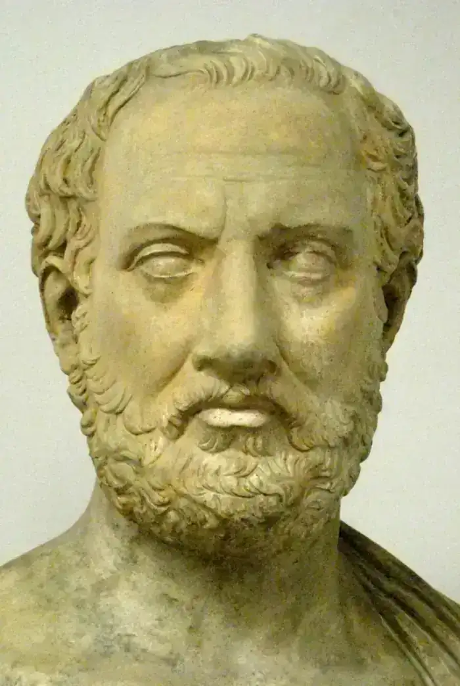

The claim
Graham Allison's Belfer Center project identified sixteen cases since 1500 in which a rising power threatened to displace a ruling one, and found that twelve ended in war. The framing is deliberately deterministic: the structural pressure, not the intentions of leaders, is what makes the trap.
Maps, diagrams and images


The named cases include Portugal versus Spain, the Netherlands versus Britain, France versus Britain, the rise of Germany against Britain, and the United States against Britain — the last being one of the four that did not end in war.
The policy use is almost always about the United States and China, where the analogy is presented as a warning that conscious management is required to escape a structural pattern.
Why historians push back
Case selection is the main objection. The cases were chosen because they are famous great-power confrontations, which guarantees that a high proportion ended badly; transitions that were managed quietly are less likely to be in the dataset at all.
Coding is the second. 'Rising power', 'ruling power' and 'war' each involve judgement calls, and several cases — the Anglo-American transition, the Spanish-Portuguese case — are included on generous definitions. Reclassify a few and the ratio moves a long way.
The causal story is the third. Power transition theory (Organski) is a serious research programme, but it predicts war when a dissatisfied challenger overtakes a satisfied hegemon — a narrower condition than 'a rising power exists', and one that makes the outcome depend on satisfaction, which is exactly what the trap metaphor omits.
Useful: as a checklist of the mechanisms that make confrontations escalate — security dilemmas, honour, domestic pressure, misperception of the other side's resolve.
Not useful: as a probability estimate. A 12-in-16 figure computed from selected cases is not a base rate for any real pair of states.
The self-fulfilling risk: if both sides believe the trap is inevitable, they prepare for war, which is a mechanism the theory creates rather than describes.
What it gets right: structural pressure is real, and the peaceful cases — Britain handing over to the United States — required deliberate choices, which is the opposite of determinism.
The archive labels this live debate because the historical pattern is a genuine object of study and the popular use of it is closer to prophecy than to analysis.
Why it is in the archive
Because it is a case where a quotation from Thucydides, a small historical dataset and a policy slogan are routinely treated as one thing.
Related: democratic peace, MAD stability.
Sources for this page
- Wikipedia, “Thucydides Trap” — the claim and the criticismsen.wikipedia.org
- Allison (2017), Destined for War — the argument in fullen.wikipedia.org
- Thucydides, History of the Peloponnesian War, Book I — the passage itselfwww.gutenberg.org
- Wikipedia, “Power transition theory” — the older, narrower research programmeen.wikipedia.org
Open resources on this topic
- PapersOpen-access articles: DOAJ · PubMed Central · Internet Archive Scholar
- BooksPublic-domain and borrowable copies: Open Library · Project Gutenberg · Google Books · Internet Archive
More images
Cite this page
Momin, S. (2026). The Thucydides Trap. The Larger World Archive. https://drsamonline.github.io/LARGE_GLOBE/thucydides-trap.htmlMomin, Sohil. “The Thucydides Trap.” The Larger World Archive, 2026, https://drsamonline.github.io/LARGE_GLOBE/thucydides-trap.html.Momin, Sohil. “The Thucydides Trap.” The Larger World Archive, 2026. https://drsamonline.github.io/LARGE_GLOBE/thucydides-trap.html.@misc{the2026thucydides,
author = {Momin, Sohil},
title = {The Thucydides Trap},
year = {2026},
howpublished = {The Larger World Archive},
url = {https://drsamonline.github.io/LARGE_GLOBE/thucydides-trap.html},
note = {Last reviewed 20 November 2026}
}Last reviewed 20 November 2026 · Corrections policy · this page is not peer reviewed